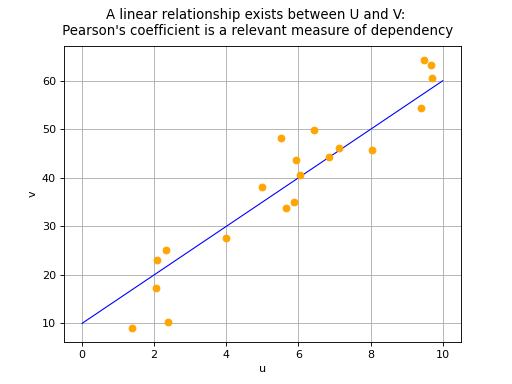
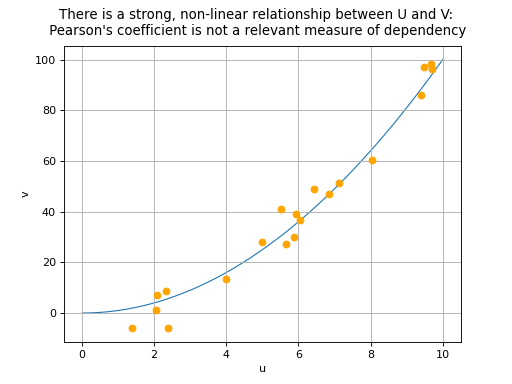
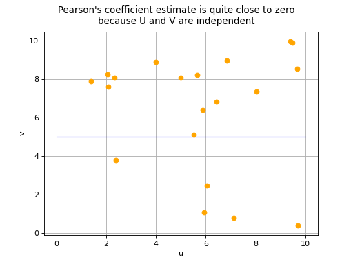
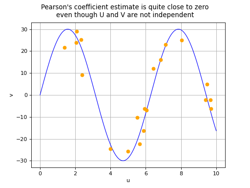

Pearson correlation coefficient¶
This method deals with the parametric modelling of a probability
distribution for a random vector
 . It aims to measure
a type of dependence (here a linear correlation) which may exist between
two components and .
. It aims to measure
a type of dependence (here a linear correlation) which may exist between
two components and .
The Pearson’s correlation coefficient aims to measure the strength of a linear relationship between two random variables and . It is defined as follows:
where
,
, ,
and .
If we have a sample made up of a set of  pairs
, Pearson’s
correlation coefficient can be estimated using the formula:
pairs
, Pearson’s
correlation coefficient can be estimated using the formula:
where and represent the empirical means of the samples and .
Pearson’s correlation coefficient takes values between -1 and 1. The closer its absolute value is to 1, the stronger the indication is that a linear relationship exists between variables and . The sign of Pearson’s coefficient indicates if the two variables increase or decrease in the same direction (positive coefficient) or in opposite directions (negative coefficient). We note that a correlation coefficient equal to 0 does not necessarily imply the independence of variables and : this property is in fact theoretically guaranteed only if and both follow a Normal distribution. In all other cases, there are two possible situations in the event of a zero Pearson’s correlation coefficient:
the variables and are in fact independent,
or a non-linear relationship exists between and .
(Source code, png, hires.png, pdf)
{kind=link}
{kind=link}

(Source code, png, hires.png, pdf)
{kind=link}
{kind=link}

(Source code, png, hires.png, pdf)
{kind=link}
{kind=link}

(Source code, png, hires.png, pdf)
{kind=link}
{kind=link}

The estimate of Pearson’s correlation coefficient is sometimes denoted by .
Examples: